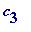
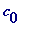
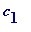
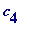
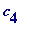
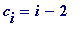
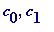
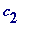
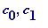
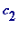

Continuation to the Introduction, and some worked examples
Now we will see how to complete the details of the identification of the 'hidden' card.
Recall from the Introduction our illustrative example 17, 38, 62, 116 and 120, where A knows ' i ' to be 3 and ' s ' to be 2, and where P - on receipt of the 4 cards - knows ' s ' to be '2'. Recall that  renumbered value is 113 (= (- s ) (mod 5)).
Agreement on how that may be done . Consider this quadruple of the 4 passed c 's: (38, 62, 17, 120), and read the entries from left to right:
Now, simply make the understanding that passing the four cards 17 (=

), 38 (=

), 62 (=
 ) and 120 (=

) in the left-to-right order (38, 62, 17, 120)
would signal
the number 1.3! + 1.2! + 0.1! (=8).
) and 120 (=

) in the left-to-right order (38, 62, 17, 120)
would signal
the number 1.3! + 1.2! + 0.1! (=8).
But, wishing to signal the number 22 (=
3
.3!+
2
.2!+
0
.1!) from our example above, we should signal by passing in the left-to-right order (120, 62, 17, 38) since:
The point is simply that for any quadruple (A, B, C, D) of distinct numbers:
P
then knows that the hidden
 has shifted value 113 (= 5.(the decoded
22
)) + (5 -
s
)) , and its actual value satisfies the vital congruence:
has shifted value 113 (= 5.(the decoded
22
)) + (5 -
s
)) , and its actual value satisfies the vital congruence:
 (mod 5)
P
then knows that
 cannot be 17, 38 nor 62 (they are less than the shifted value, and so must be

and

), and so
cannot be 17, 38 nor 62 (they are less than the shifted value, and so must be

and

), and so
 must be
must be
 , allowing
P
know that
i
is 3. Adding 3 to 113 gives the hidden card 116.
, allowing
P
know that
i
is 3. Adding 3 to 113 gives the hidden card 116.
A telegraphic worked example with n = 4
Advice . PRACTICE!!
Exercise . Take the simple case n = 3, choose two fixed cards (say '2' and '6') numbered 0 to 7, and a 3rd variable card ' c '. Now, work out the signals for the triple (2, c , 6).